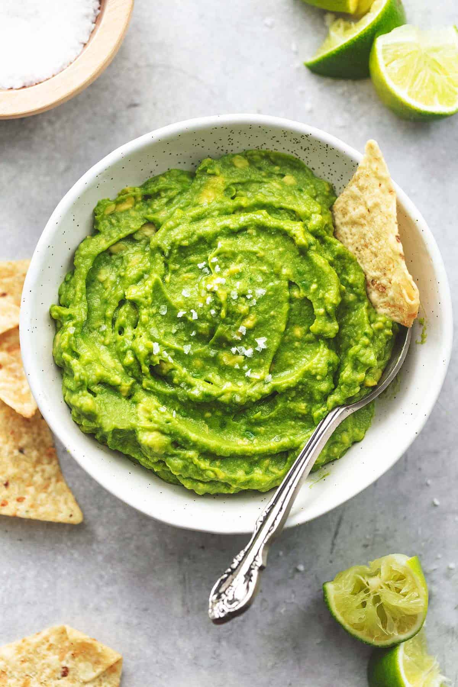

Guacemole

Description
Guacamole is a creamy, flavorful dip that brings a taste of Mexico to any meal. Made with ripe avocados, zesty lime, fresh tomatoes, and aromatic cilantro, it’s both nutritious and delicious. The combination of smooth avocado with the crunch of onions and the slight heat from jalapeños creates a perfect balance. It’s incredibly versatile—use it as a dip, a spread for sandwiches, or a topping for tacos and grilled meats. Packed with healthy fats, fiber, and vitamins, guacamole is as wholesome as it is tasty. Best served fresh, it’s a crowd-pleaser that adds a vibrant touch to any dish.
Ingredients
- 3 ripe avocados
- 1 small red onion, finely chopped
- 1 small tomato, diced
- 1 clove garlic, minced
- 1 jalapeño, finely chopped (optional)
- Juice of 1 lime
- 2 tbsp fresh cilantro, chopped
- ½ tsp salt (adjust to taste)
- ¼ tsp black pepper
Instructions
- Cut the avocados in half, remove the pits, and scoop the flesh into a bowl.
- Mash with a fork until smooth or slightly chunky, depending on preference.
- Stir in the chopped onion, tomato, garlic, jalapeño (if using), lime juice, cilantro, salt, and pepper.
- Mix well and taste, adjusting seasoning as needed.
- Serve immediately with tortilla chips, tacos, or as a side dish.
Home